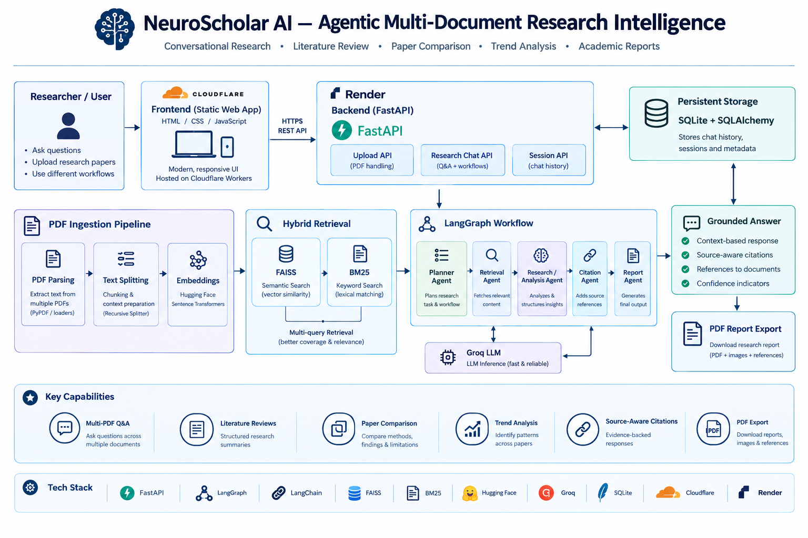

Research chat across PDFs
Upload multiple research papers and ask questions about their content.
PROJECT DEEP DIVE · RESEARCH INTELLIGENCE
An agentic multi-document research platform for conversational paper exploration, literature reviews, comparison, trend analysis, and academic reports.
NeuroScholar AI is an AI-powered research platform that helps users explore multiple scientific papers through conversational research, literature-review workflows, paper comparison, trend analysis, and academic report generation. It combines semantic and keyword retrieval with agentic workflows so responses can be grounded in uploaded documents.
Upload multiple research papers and ask questions about their content.
Combines FAISS semantic similarity with BM25 keyword matching and multi-query retrieval.
Supports literature reviews, paper comparisons, trend analysis, and structured reports.
Persists research sessions using SQLite and supports downloadable PDF reports.
